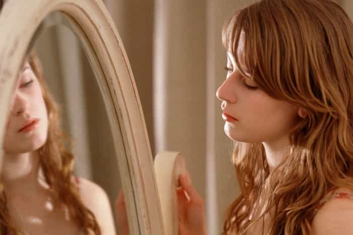

< < < Back
Lena Dunham And The Hollowness Of Millennial Girls – Return Of Kings
Last week saw one of the most embarrassing temper tantrums ever thrown in public, when Girls creator and feminist activist Lena Dunham went into a “rage spiral” at people calling her a child molester based on quotes from her own memoir. In Not That Kind of Girl, Lena Dunham’s 300-page paean to the awesomeness of Lena Dunham, our plucky rich girl heroine describes sexually abusing her younger sister in ways that would land someone with less money—and more conservative views—in prison:
One day, as I sat in our driveway in Long Island playing with blocks and buckets, my curiosity got the best of me. Grace was sitting up, babbling and smiling, and I leaned down between her legs and carefully spread open her vagina. She didn’t resist and when I saw what was inside I shrieked.
My mother came running. “Mama, Mama! Grace has something in there!”
My mother didn’t bother asking why I had opened Grace’s vagina. This was within the spectrum of things I did. She just got on her knees and looked for herself. It quickly became apparent that Grace had stuffed six or seven pebbles in there. My mother removed them patiently while Grace cackled, thrilled that her prank had been a success.
After the red mist cleared, Dunham threatened to sue Truth Revolt for calling her what she called herself—a sexual predator—and tried to defend herself by claiming that “other people did weird stuff when they were kids too!“ Uh Lena, no, we haven’t. “Weird” is sticking a fork in an electrical socket. Giving your toddler sister a gynecological exam then bragging about it in a book is sick.
The most remarkable thing about Dunham’s tales of incestuous molestation is that it took this long for them to become public. Not That Kind of Girl was released in September, yet the only reviewer to even mention these segments was Jezebel’s Jia Tolentino, who described Dunham’s vaginal spreading as “welcome,” “old-fashioned” and “childish.” Then again, seeing as Dunham had to resort to having her father Carroll blurb the book, maybe the lit-press was just playing a game of Let’s Not and Say We Did.
The Girls Are Not Alright
My primary experience with Lena Dunham was watching the first season of Girls, in one of my bizarre episodes where I try to understand how “ordinary fuckin’ people” think. It’s one of the most spectacularly lazy TV shows I’ve ever seen, a poorly-written mess that queefs pure concentrated smug in your face. Girls is basically the daughters of the elite (all of the show’s main stars have rich and famous daddies) playing dress-up with HBO’s money.
At the time I watched the first season, folks in the manosphere were claiming that Girls was somehow “red pill,” oblivious to how the show took basic truths and spun them to justify female piggishness and vanity. The show is clearly written to frame Hannah (Dunham’s character) as sympathetic, whether she’s stealing tips from underpaid Mexican maids or breaking her beau Adam’s heart because… well, she doesn’t have a reason. The second season took this wish fulfillment to even more ridiculous levels, featuring an episode where the dumpy, titless Hannah somehow rejects a man who’s far more attractive than him after leading him on for days.
Assuming there’s any point to Girls beyond rich girl vanity, it’s cultural inoculation: taking the truly dangerous ideas of the manosphere and killing them in a lab to vaccinate the female population. Girls is about telling the most narcissistic, damaged generation of women in American history that their bad choices are not their fault, they’re special just the way they are, and anyone who protests this is just a sexist meanie who wants to put them down. That’s about as “red pill” as the SPLC Intelligence Report.

They Are The Stuffed Women, Leaning Together, Headpiece Filled With Straw
Because of her work on Girls, Lena Dunham has been lauded as the “voice” of the Millennial generation, which is enough to make me wish the GenXers would adopt me. Most sensible people would scoff at the idea of a trust-fund nihilist from Brooklyn being the voice of anyone, but I’m not so sure anymore.
Lena Dunham is the embodiment of the Millennial woman. Raised by permissive parents, her head filled with affirmations of her own wonderfulness, shielded from the negative consequences of her actions, she is a monster. Having never known pain, she has no empathy and cannot acknowledge the humanity of those around her. Her friends, lovers, family members are mere tools in her quest for narcissistic supply. She has no soul, only a black hole that sucks in everything and crushes it.
And before the usual suspects come in, yes, many of these criticisms also apply to Millennial men. But Millennial women wield far more power than men in mainstream culture. The majority of TV watchers and moviegoers are women; virtually all consumer spending is controlled by women; politicians jockey for the female vote by conjuring up mythical “wars” on women and creating fake “Women’s Equality Parties” to win extra votes. Outside of video games, nobody gives a crap what the Millennial male thinks, so he’s left to masturbate in the corner alone.
The Millennial woman is an intellectual vacuum. She cannot form true relationships, so she compensates with social media, the crack pipe of Twitter and Facebook giving validation to her existence. She pops Prozac like candy to quell her feelings of suicidal ideation. She covers herself in tattoos and piercings as a narcissistic defense mechanism: aware of her own vapidity, she clothes herself in markings to keep people from seeing the truth. She inflates the molehills of her life—“street harassment,” “date rape,” having to pay for her own birth control—into mountains because she has no real problems.
Sex is where the Millennial woman displays the true extent of her dysfunction. Too autistic to handle a real-life conversation, she retreats to the safety of Tinder, where she can filter out all men who don’t perfectly match her narcissistic fantasy. Her feminine instincts dulled by mass media, she resorts to imitating the phony moans of porn stars, her every motion as mechanistic as a sexbot. Incapable of true emotional intimacy, she substitutes it with the spiritual junk food that is meaningless hookups.
So long as the Instagram likes and Tinder matches keep piling up, she’ll never have to confront her inner emptiness.
Lena Dunham is their spokesgirl, a woman so clueless that she thinks that she can write about prying her sister’s vagina open and think people won’t find it disgusting. Note that her parents didn’t bother telling her that she shouldn’t be playing with her sister’s loins. After all, telling young Lena that something was bad might have made her sad, and we can’t very well have that, now can we? Dunham has even confirmed her narcissism by claiming she views her sister as an “extension” of herself, as opposed to an autonomous person with her own consciousness, wants and needs.
This is why the white girl “intelligentsia,” from Jia Tolentino to Salon’s Emily Gould, are closing ranks to defend Dunham. According to their own ideology, they are helping to perpetuate rape culture by making excuses for Dunham’s kiddie-diddling. They don’t care because deep down, they know that Dunham is just a more extreme version of themselves. They cannot condemn her without negating their own existences.
This Is The Way The World Ends
Whenever a man criticizes the way women behave, the default reaction is that it’s always his fault somehow. “You’re just choosing the wrong girls.” “Like attracts like.” “Not all women are like that!” When I was young, dumb, and full of cum, I actually believed it. But you can only thrust your hand into an open flame for so long before your flesh catches fire.
With just one exception, the most fulfilling relationships I’ve had were with girls who were either non-American, significantly older (mid-thirties and up) or younger than me (young like 18-19 young, you perverts). Why? They treated me like a human being and not a supporting actor in the stage play of their lives. The social retardation and narcissism endemic to Millennials is a curse all their own. No, not every Millennial woman is a vapid narcissist, but not every apple in a basket has to have a worm in it to convince people to toss the whole thing aside.
And remember: these girls are next in line to run the country. The girls who think being a portly, rich, child-touching narcissist is something to aspire to.
God help us all.
Read More: The Lena Dunham Sexual Abuse Scandal Showcases The Double Standard Of Feminism